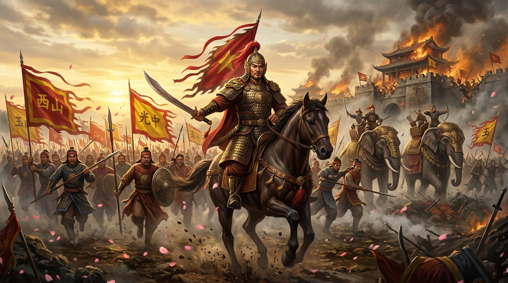
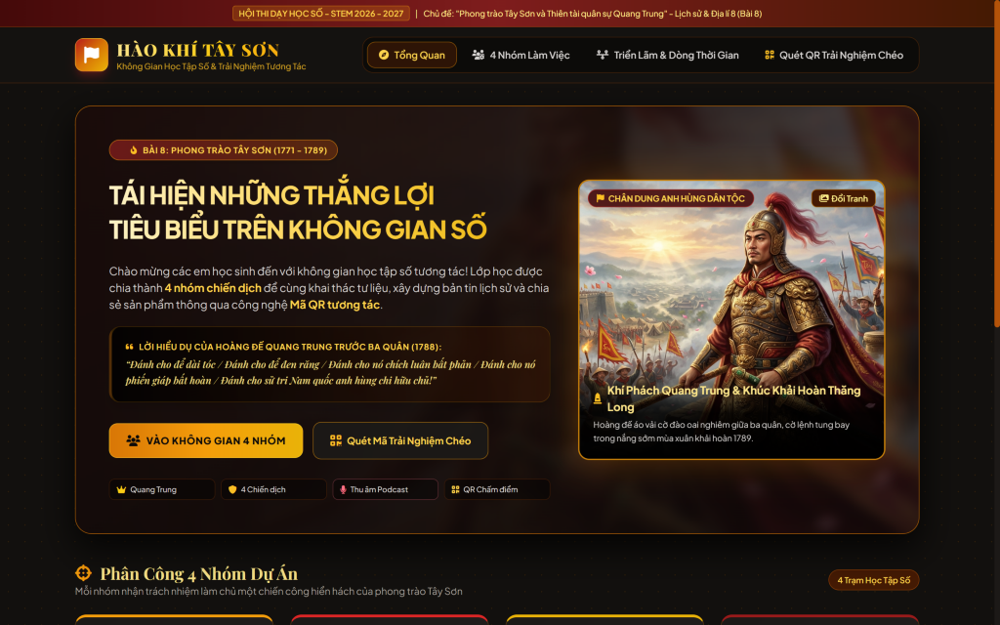
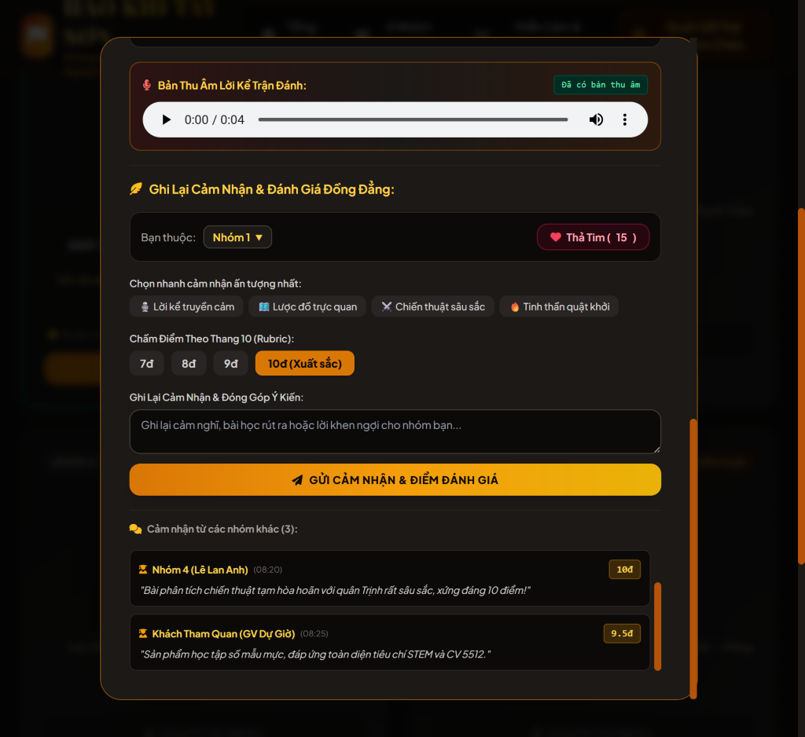
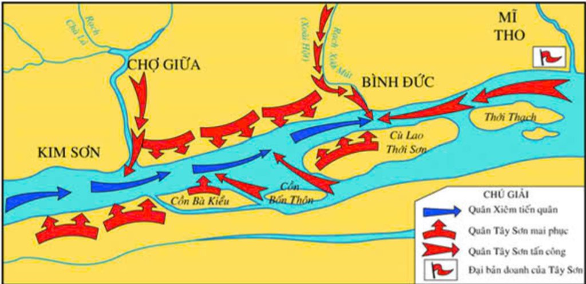
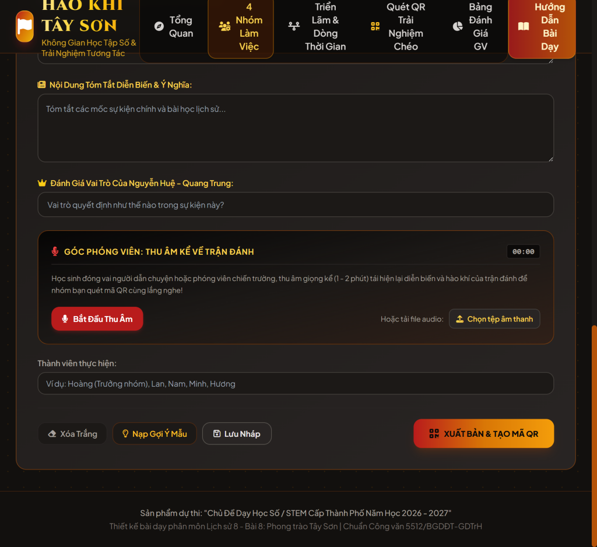
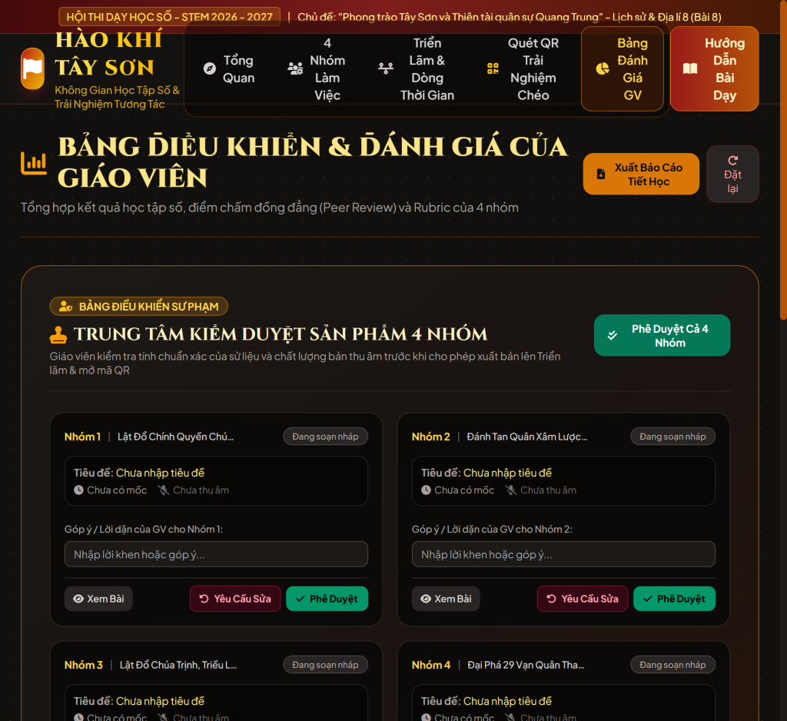
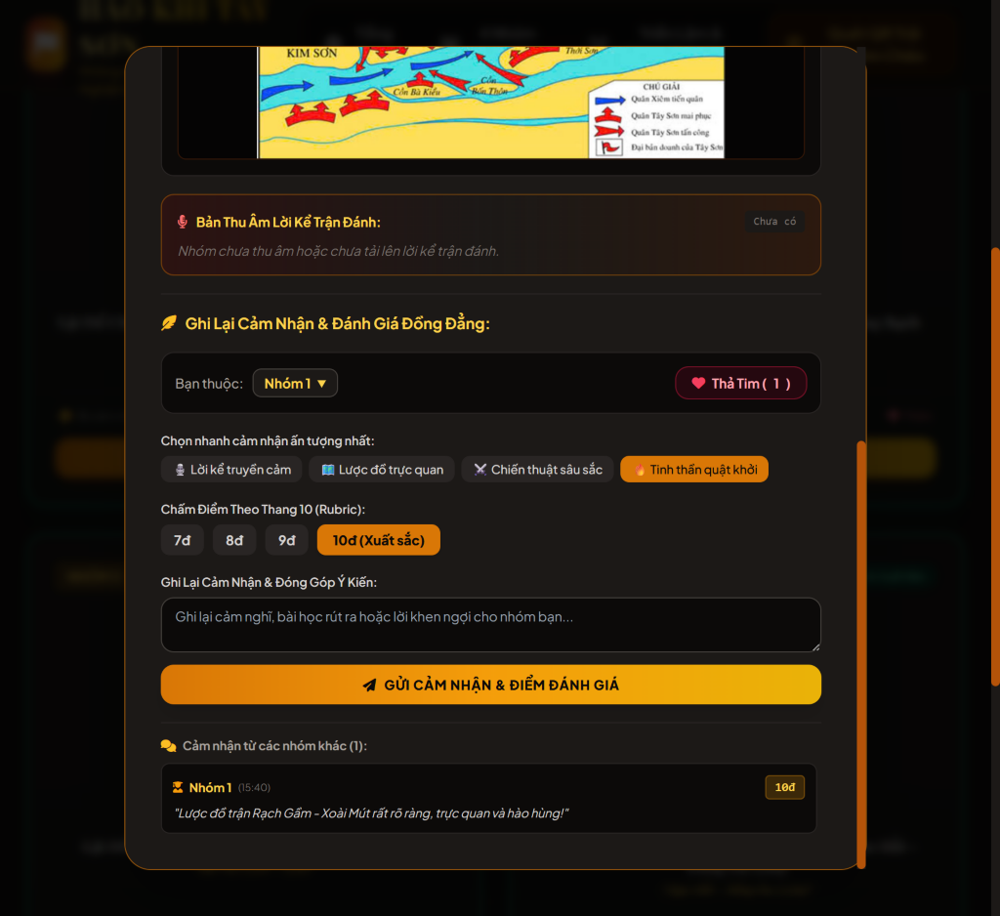

Môn: Lịch sử và Địa lí 8 (Bộ sách Kết nối tri thức với cuộc sống)
BÀI 8: PHONG TRÀO TÂY SƠN (GIAI ĐOẠN 1771 - 1789)
HƯỚNG DẪN HỌC TẬP & THAO TÁC TRÊN NỀN TẢNG SỐ
Không Gian Học Tập Số Tương Tác: "Hào Khí Tây Sơn"
Giáo viên thực hiện: Thầy Nguyễn Đức An
Thời lượng giảng dạy: 02 Tiết (90 phút)
Học liệu số trực tuyến: https://lichsu-eight.vercel.app/

Hoàng đế Quang Trung cưỡi voi tiến vào Thăng Long đại thắng mùa xuân Kỷ Dậu 1789
1. NĂNG LỰC LỊCH SỬ
- Khám phá 4 mốc son lịch sử tiêu biểu của phong trào Tây Sơn (1771 - 1789).
- Phân tích tài nghệ quân sự tài tình: thủy chiến Rạch Gầm, hành quân thần tốc Kỷ Dậu 1789.
- Đánh giá công lao to lớn của Hoàng đế Quang Trung trong sự nghiệp thống nhất & bảo vệ Tổ quốc.
2. NĂNG LỰC SỐ & STEM
- Làm chủ không gian học tập số tương tác trực tuyến 60fps.
- Xử lý đa phương tiện: tranh điện ảnh 3D, bản đồ số, thuyết minh audio HD.
- Thực hành giải Mật mã Lịch sử và thu âm thuyết minh trực tiếp trên web.
- Trải nghiệm quét mã QR và đánh giá đồng đẳng Realtime Cloud Sync.
3. HÀNH TRÌNH 4 TRẠM SỐ
- TRẠM 1: Khởi động hào hùng - Lời hiệu triệu Quang Trung (7 phút).
- TRẠM 2: 4 Nhóm chiến dịch làm hồ sơ số & giải mật mã (25 phút).
- TRẠM 3: Giáo viên kiểm duyệt & xuất bản Poster (7 phút).
- TRẠM 4 (Tiết 2): Thuyết trình Poster, quét QR thả tim ❤️ (35 phút).
TRẢI NGHIỆM ĐIỆN ẢNH SỬ THI
Giáo viên mở Tab 1: Tổng Quan & Phim Tư Liệu trên màn chiếu lớn.
Bật giai điệu sử thi hào sảng: ca khúc "Hào Khí Việt Nam" kết hợp hiệu ứng tàn lửa chiến trận sống động.
Lời hiểu dụ đanh thép của Quang Trung trước ba quân (1788):
“Đánh cho để dài tóc,
Đánh cho để đen răng,
Đánh cho nó chích luân bất phản,
Đánh cho nó phiến giáp bất hoàn,
Đánh cho sử tri nam quốc anh hùng chi hữu chủ!”
💡 Câu hỏi gợi mở: Em cảm nhận được khí phách hào hùng và quyết tâm gì của Hoàng đế Quang Trung qua lời hiệu triệu trên?

KHỞI NGHĨA BÙNG NỔ & LẬT ĐỔ CHÚA NGUYỄN
- • Địa bàn: Căn cứ Tây Sơn thượng đạo (An Khê, Gia Lai) và hạ đạo (Tây Sơn, Bình Định).
- • Lực lượng: Nông dân nghèo, đồng bào Bana, Chăm, thợ thủ công, thương nhân.
- • Chiến công: 4 lần tiến quân vào Gia Định lật đổ hoàn toàn chính quyền chúa Nguyễn.
- • Từ khóa: Lấy của nhà giàu chia cho người nghèo, cờ đào áo vải.
CHIẾN THẮNG RẠCH GẦM - XOÀI MÚT (ĐÁNH XIÊM)
- • Bối cảnh: Nguyễn Ánh cầu viện 5 vạn quân Xiêm tràn sang cướp phá Gia Định.
- • Địa bàn: Khúc sông Tiền từ Rạch Gầm đến Xoài Mút (Tiền Giang).
- • Nghệ thuật: Thủy chiến mai phục, nghi binh nhử địch vào trận địa hẹp khi triều rút.
- • Kết quả: Đánh tan 5 vạn quân giặc, bảo vệ vững chắc nền độc lập bờ cõi phía Nam.
TIẾN QUÂN RA BẮC LẬT ĐỔ TRỊNH - NGUYỄN
- • Chiến dịch Phú Xuân: Giải phóng toàn bộ Đàng Trong, hạ thành Phú Xuân (1786).
- • Tiến thẳng Thăng Long: Với danh nghĩa 'Phù Lê diệt Trịnh', đánh sụp tập đoàn chúa Trịnh.
- • Xóa bỏ Lê Chiêu Thống: Chấm dứt sự mục nát của chính quyền phong kiến Bắc Hà.
- • Ý nghĩa: Xóa bỏ ranh giới chia cắt Đàng Trong - Đàng Ngoài hơn 200 năm.
ĐẠI PHÁ 29 VẠN QUÂN THANH (NGỌC HỒI - ĐỐNG ĐA)
- • Bối cảnh: Lê Chiêu Thống rước 29 vạn quân Mãn Thanh do Tôn Sĩ Nghị chỉ huy sang xâm lược.
- • Hành quân thần tốc: Lên ngôi Hoàng đế tại Phú Xuân, hành quân ngày đêm ra Tam Điệp.
- • Quyết chiến: Đêm mùng 4 rạng mùng 5 Tết đánh tan đồn Ngọc Hồi, Khương Thượng, Đống Đa.
- • Đại thắng: Trưa mùng 5 Tết Kỷ Dậu 1789, áo bào sạm màu thuốc súng vào Thăng Long.
CÁC THAO TÁC CẦN THỰC HIỆN:
1. Quét mã QR trên máy chiếu:
Dùng Camera điện thoại hoặc Zalo quét mã QR toàn lớp (hoặc mở trình duyệt gõ: https://lichsu-eight.vercel.app/).
2. Mở Không gian nhóm:
Bấm vào mục "4 Nhóm Làm Việc" trên thanh Menu chính của website.
3. Chọn đúng Nhóm của mình:
Nhấp vào tab chuyên đề: Nhóm 1, Nhóm 2, Nhóm 3 hoặc Nhóm 4.
4. Khởi tạo thông tin nhóm:
Nhập Tên nhóm tự đặt và Danh sách các thành viên cùng tham gia.

KHAI THÁC HỌC LIỆU SỐ TÍCH HỢP:
1. Đọc đoạn trích SGK Lịch sử 8:
Hệ thống trích lục sẵn nội dung chuẩn của bộ sách Kết nối tri thức với cuộc sống ngay trên màn hình làm bài.
2. Quan sát Lược đồ trận đánh:
Nhấp vào ảnh lược đồ để phóng to: xem thế trận sông ngòi, hướng tiến quân và các mũi phục kích.
3. Thảo luận nhóm giải quyết 3 câu hỏi gợi mở:
• Ai là người chỉ huy và đóng vai trò then chốt?
• Nét độc đáo trong nghệ thuật quân sự của Tây Sơn là gì?
• Ý nghĩa của thắng lợi này đối với vận mệnh dân tộc?

4 NỘI DUNG BẮT BUỘC TRONG BÀI LÀM:
Sáng tạo câu khẩu hiệu thể hiện ý chí quật khởi của nghĩa quân (VD: "Cờ đào rực lửa - Quét sạch giặc thù").
Trình bày súc tích các giai đoạn, địa danh lịch sử quan trọng theo trình tự thời gian.
Nêu rõ chiến thuật: Thủy chiến mai phục, nghi binh, thần tốc bất ngờ...
Khẳng định tài năng lãnh đạo kiệt xuất và phẩm chất vì nước vì dân của người anh hùng áo vải.
THỬ THÁCH ĐẶC BIỆT: "MẬT MÃ LỊCH SỬ"
Mỗi nhóm có một câu đố bí ẩn lịch sử độc quyền tích hợp trực tiếp trên hệ thống làm bài.
Cách thức giải mật mã:
- Đọc kỹ câu đố bí ẩn gợi ý về địa danh, nhân vật hoặc sự kiện then chốt.
- Tra cứu nguồn sử liệu SGK để tìm ra Từ khóa mật mã.
- Nhập đáp án vào ô "Từ khóa mật mã lịch sử".
Phần thưởng sáng tạo:
Nhóm giải đúng mật mã sẽ được cộng điểm trực tiếp và nhận huy hiệu vinh danh "Nhà Sử Học Xuất Sắc" trên Poster Triển Lãm!
CÔNG CỤ THU ÂM TRỰC TIẾP TRÊN WEB:
1. Cử giọng đọc đại diện:
Chọn bạn có chất giọng truyền cảm, dõng dạc, thể hiện được không khí hào hùng của phong trào Tây Sơn.
2. Thực hiện ghi âm (60 - 90 giây):
• Cách 1: Bấm nút "Bắt đầu thu âm" (Mic) trực tiếp trên điện thoại/máy tính.
• Cách 2: Tải tệp âm thanh ghi âm sẵn từ máy (.mp3, .wav).
3. Nghe lại & Kiểm tra chất lượng:
Bấm nghe lại để đảm bảo âm thanh rõ ràng, không bị ồn hay đứt quãng.
4. Nộp bài cho Giáo viên:
Bấm nút to màu đỏ: "GỬI BÀI CHO GIÁO VIÊN KIỂM DUYỆT" để chuyển giao sản phẩm lên bảng điều khiển sư phạm.

VAI TRÒ CỦA GIÁO VIÊN & HỆ THỐNG:
1. Trung tâm kiểm duyệt sư phạm:
Thầy giáo Nguyễn Đức An theo dõi bài nộp của 4 nhóm trên Bảng điều khiển (Teacher Moderation Dashboard).
2. Thẩm định tính chuẩn xác sử liệu:
Thầy kiểm tra sử liệu, chính tả, cách phân tích chiến thuật và chất lượng tệp ghi âm giọng đọc.
3. Phê duyệt & Chuyển đổi số:
Khi thầy bấm "Phê duyệt đạt chuẩn", hệ thống tự động tổng hợp bài viết và bản thu âm thành POSTER TRIỂN LÃM DI SẢN tại Tab 2.
4. Tự động sinh Mã QR tương tác:
Mỗi Poster được cấp 1 mã QR riêng để sẵn sàng cho hoạt động đánh giá đồng đẳng ở Tiết 2!

TRẢI NGHIỆM ĐỒNG BỘ THỜI GIAN THỰC (CLOUD SYNC):
1. Thuyết trình Poster (6 phút/nhóm):
Đại diện nhóm lên bảng báo cáo nội dung kết hợp bật phát bản thu âm giọng đọc hào hùng.
2. Cả lớp quét mã QR trên màn chiếu:
Học sinh dưới lớp dùng điện thoại quét mã QR tại góc Poster của nhóm bạn để mở thẳng trang tương tác.
3. Bấm Thả tim ❤️ yêu thích:
Bình chọn cho Poster có nội dung hay, giọng đọc hào sảng và thiết kế đẹp mắt.
4. Gửi lời bình luận nhận xét:
Viết nhận xét, góp ý chân thành và bấm gửi. Lời nhận xét sẽ hiện lên màn hình lớn sau 2 giây!

1. TÍNH CHUẨN XÁC SỬ LIỆU
3.0 Điểm- • Tái hiện chuẩn xác bối cảnh lịch sử, thời gian và địa bàn then chốt.
- • Nêu bật được các diễn biến cốt lõi, không sai lệch số liệu lịch sử.
- • Khai thác hiệu quả nguồn sử liệu SGK Kết nối tri thức và lược đồ số.
- • Đánh giá khách quan, sâu sắc về vai trò của lãnh tụ Quang Trung.
2. GIẢI MẬT MÃ & NGHỆ THUẬT QUÂN SỰ
2.5 Điểm- • Giải chính xác câu đố bí ẩn lịch sử và tìm đúng Từ khóa mật mã.
- • Phân tích sắc bén nét độc đáo trong nghệ thuật tác chiến Tây Sơn.
- • Nêu bật yếu tố bất ngờ, mai phục, nghi binh, thần tốc trong chiến dịch.
- • Khẩu hiệu hành động (Slogan) mang tính sáng tạo và cảm hứng hào hùng.
3. THUYẾT MINH & CHẤT LƯỢNG ÂM THANH
2.5 Điểm- • Bản thu âm rõ ràng, không bị rè hoặc lẫn nhiều tạp âm môi trường.
- • Giọng đọc truyền cảm, hào sảng, đúng tinh thần sử thi Tây Sơn.
- • Poster trình bày trang trọng, bố cục hài hòa hoa văn Trống đồng.
- • Phối hợp nhịp nhàng giữa trình chiếu Poster và âm thanh minh họa.
4. THUYẾT TRÌNH & ĐÁNH GIÁ ĐỒNG ĐẲNG
2.0 Điểm- • Báo cáo viên tự tin, mạch lạc, làm chủ thời gian quy định (6 phút/nhóm).
- • Khả năng phản biện, trả lời lưu loát các câu hỏi gợi mở từ thầy cô và bạn.
- • Nhận được nhiều lượt thả tim ❤️ và đánh giá tích cực từ cả lớp qua mã QR.
- • Tinh thần đoàn kết, phân công nhịp nhàng giữa các thành viên.
Ý NGHĨA LỊCH SỬ PHONG TRÀO TÂY SƠN:
1. Đập tan các tập đoàn phong kiến cát cứ: Lật đổ chúa Nguyễn ở Đàng Trong, Trịnh - Lê ở Đàng Ngoài, xóa bỏ ranh giới chia cắt giang sơn hơn 200 năm.
2. Bảo vệ vững chắc độc lập chủ quyền: Đánh tan 5 vạn quân Xiêm (1785) và đại phá 29 vạn quân Mãn Thanh (1789), lập nên những trang sử vàng chói lọi.
3. Tôn vinh thiên tài quân sự Quang Trung: Người anh hùng bách chiến bách thắng, biểu tượng sáng ngời của tinh thần quyết chiến quyết thắng và lòng yêu nước nồng nàn.
4. Bài học muôn đời: Lấy dân làm gốc, phát huy sức mạnh khối đại đoàn kết toàn dân tộc và nghệ thuật tác chiến thần tốc bất ngờ.
THÔNG ĐIỆP CHO HỌC SINH THỜI ĐẠI 4.0:
• Kế thừa truyền thống bất khuất: Nuôi dưỡng lòng yêu nước, niềm tự hào dân tộc và ý thức trách nhiệm bảo vệ chủ quyền toàn vẹn lãnh thổ.
• Làm chủ công nghệ số: Tích cực ứng dụng học liệu số, chuyển đổi số trong học tập để khám phá kho tàng tri thức lịch sử vô tận của cha ông.
• Lan tỏa giá trị di sản: Chung tay gìn giữ và quảng bá hào khí dân tộc trên không gian mạng một cách văn minh, sáng tạo.
Chúc các nhóm học sinh có tiết học số thật hào hứng & thành công rực rỡ!
Thầy giáo: Nguyễn Đức An - Trường TH - THCS Nguyễn Quốc Phú